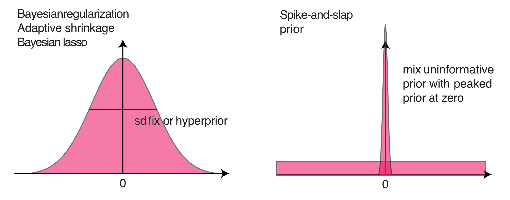
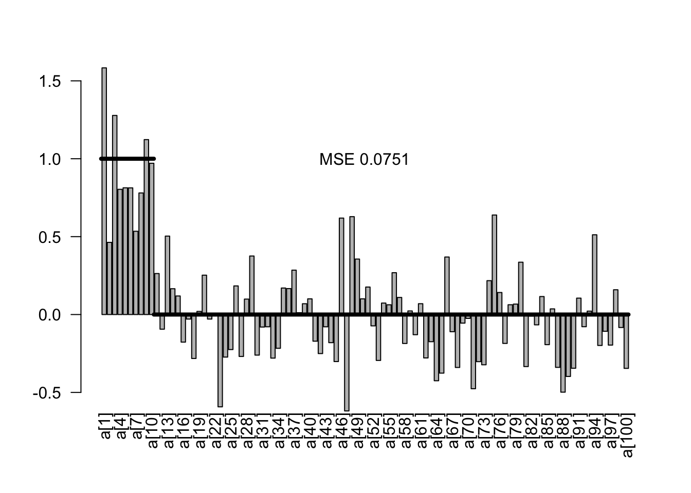
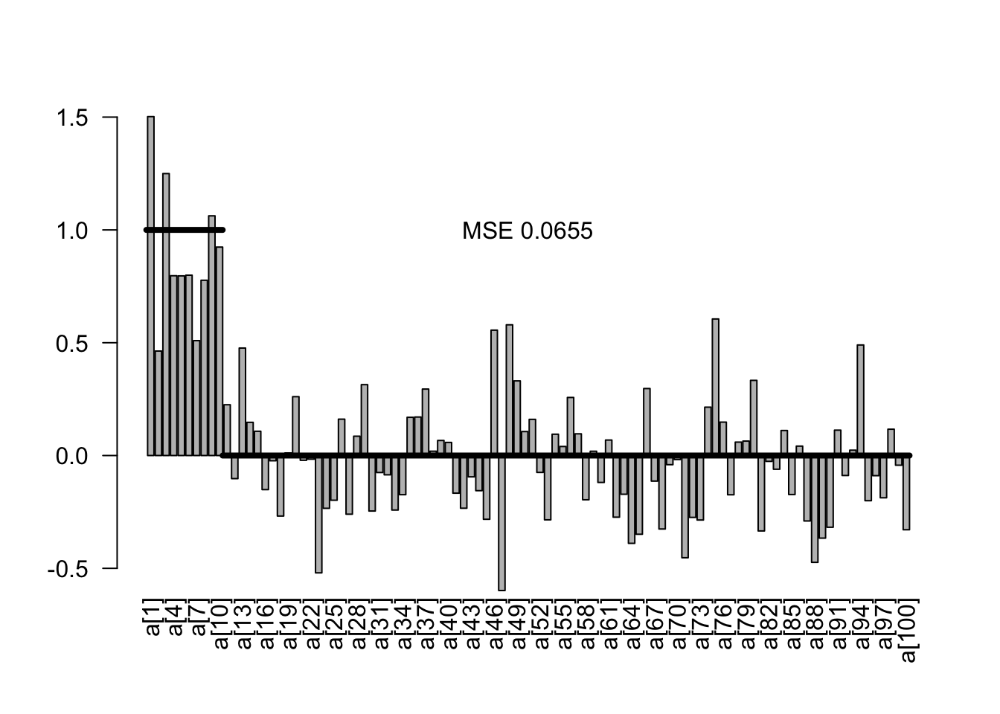
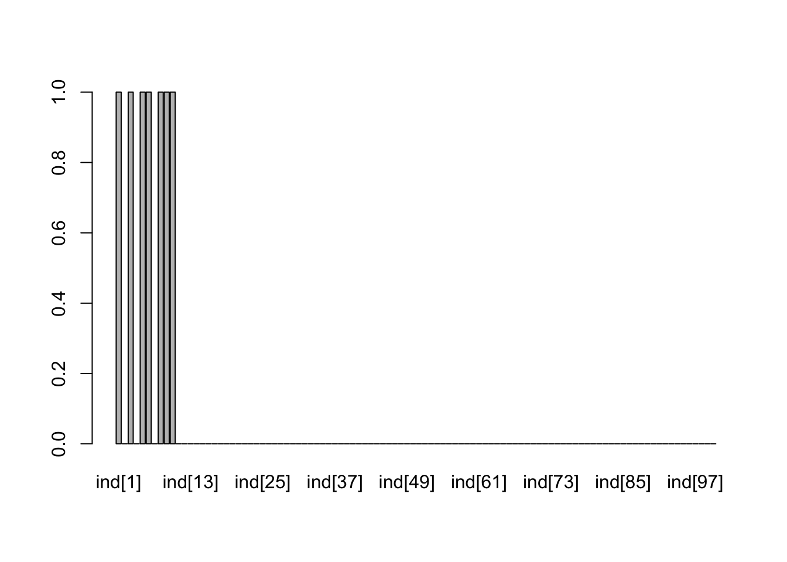
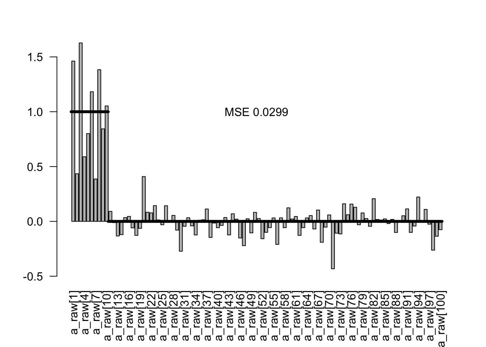
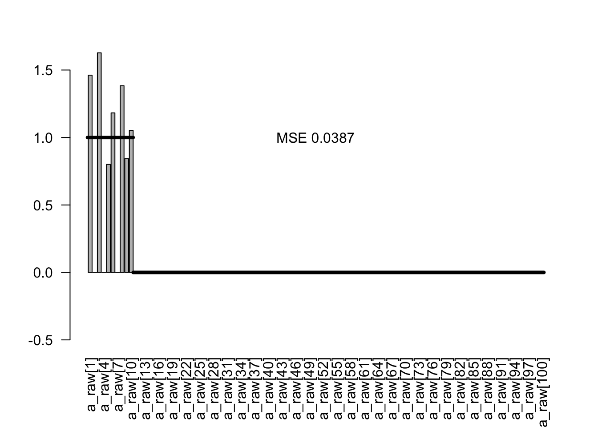
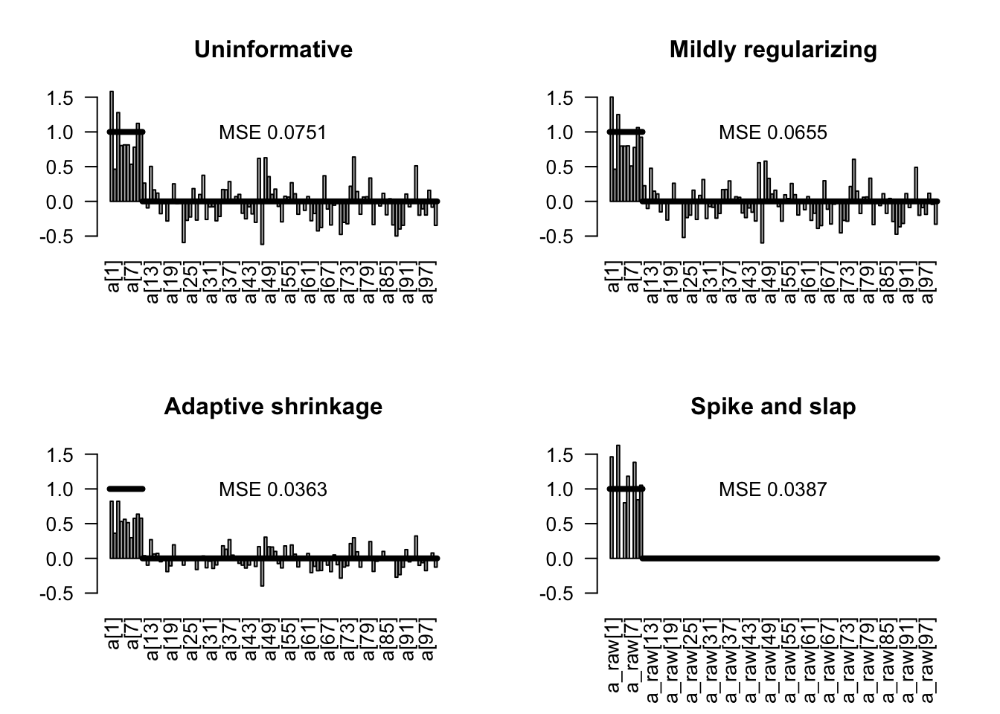
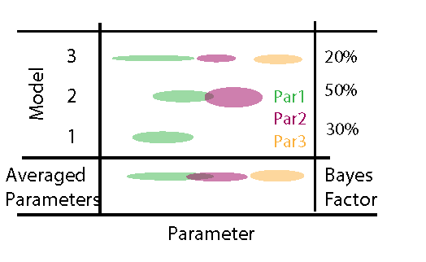
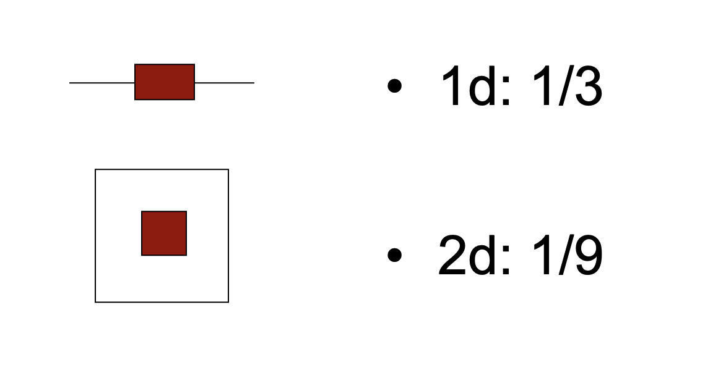

set.seed(1)
dat = data.frame(matrix(runif(20000, -0.5,0.5), ncol = 100))
dat$y = rnorm(200)
dat$y = dat$y + rowSums(dat[,1:10])
# Preparing data list for Jags
Data = list(y = dat$y, x = as.matrix(dat)[,1:100], i.max = nrow(dat))5 Bayesian model selection
Note
In this chapter, we will discuss 3 approaches to deal with the problem of model selection.
Regularizing priors
Bayesian information criteria
Bayes Factor and Posterior model weights
5.1 Regularization
The first option is not really a model selection method, but it replaces model selection in many cases. What I mean by this is the following: in many, maybe most cases where model selection is applied in frequentist analysis, the goal is NOT to find out if one of several alternative hypotheses are better supported by the data, but the goal is rather to deal with the problem that we do not have enough data to to fit the large model that we actually want to fit. The underlying problem is the bias-variance trade-off.
In this case, many frequentists use information theoretical (IT) model selection approaches to simplify the model. These approaches are also available to Bayesians (see next subsection on Bayesian IT approaches), but in many cases prior regularization is a better option to deal with this problem. The idea of this approaches is to control model complexity via priors that are deliberately more restrictive than what we would set when expressing our “pure” uncertainty about the respective parameter.

To show how these approaches works, I will create a dataset with 100 predictors, of which the first 10 have an effect with slope 1, and the 90 remaining predictors have no effect, i.e. an effect with a slope of zero.
We can look at the results of a standard frequentist regression with all predictors
fullModel = lm(y ~ . , data = dat)
#summary(fullModel)We can calculate the mean squared error (MSE) of the estimates via
true = c(rep(1,10), rep(0,90))
estimated = coef(fullModel)[-1]
MSE = var(true - estimated)For our convenience later, I will create a small function to plot this
plotEstimates <- function(estimates, ...){
MSE = round(var(true - estimates), digits = 4)
out <- barplot(estimates, las = 2, ylim = c(-0.5, 1.5), ...)
text(60, 1, paste("MSE", MSE))
lines(x = c(0,12), y = c(1,1), lwd = 4)
lines(x = c(12,120), y = c(0,0), lwd = 4)
}
plotEstimates(estimated)5.1.1 Uninformative priors
Obviously, the Bayesian equivalent of the model with wide uninformative priors would yield the same result.
library(rjags)Loading required package: codaLinked to JAGS 4.3.0Loaded modules: basemod,bugsmodelCode0 = "model{
# Likelihood
for(i in 1:i.max){
mu[i] <- inprod(a , x[i,]) + b
y[i] ~ dnorm(mu[i],tau)
}
# Prior distributions
for(i in 1:100){
a[i] ~ dnorm(0,0.0001)
}
b ~ dnorm(0,0.0001) # usually no need and safer not to regularize intercept
tau ~ dgamma(0.001, 0.001)
sigma <- 1/sqrt(tau)
}
"
jagsModel0 <- jags.model(file= textConnection(modelCode0),
data=Data,
n.chains = 3)Compiling model graph
Resolving undeclared variables
Allocating nodes
Graph information:
Observed stochastic nodes: 200
Unobserved stochastic nodes: 102
Total graph size: 20910
Initializing modelSamples0 <- coda.samples(jagsModel0,
variable.names = c("a","b","sigma"),
n.iter = 5000)
x0<- summary(Samples0)
est0 <- x0$quantiles[1:100,3]
plotEstimates(est0)
5.1.2 Mildly regularizing priors
The idea of mildly regularizing priors is that we give the regression slopes a small push towards zero. The strength of a mildly regularizing prior should be such that it doesn’t strongly influence parameter estimates, but still regularizes the problem. If predictors and responses are scaled and centered, we would expect strong effects to have effect sizes of 1. A typical prior width for a mildly regularizing prior would thus be something in the order of 1 to 10. In the code below, this is implemented by setting medium wide normal priors on the slope.
a[i] ~ dnorm(0,0.5)
Caution
As discussed, when working with informative priors, we should be aware of the scale of the predictors and the reponse, as the priors have to be viewed in relation to the data scale to say what is a wide and what is a narrow prior.
However, as we created the data in this case in with a centered uniform distribution and a unit scale, we can skip this step
In my practical work, I have often found that these priors will often help to avoid parameter identifiability problems, in particular in GLMs, thus making model selection or simplification unnecessary, while having very little influence on the parameter estimates
library(rjags)
modelCode1 = "model{
# Likelihood
for(i in 1:i.max){
mu[i] <- inprod(a , x[i,]) + b
y[i] ~ dnorm(mu[i],tau)
}
# Prior distributions
for(i in 1:100){
a[i] ~ dnorm(0,0.5)
}
b ~ dnorm(0,0.0001) # usually no need and safer not to regularize intercept
tau ~ dgamma(0.001, 0.001)
sigma <- 1/sqrt(tau)
}
"
jagsModel1 <- jags.model(file= textConnection(modelCode1),
data=Data,
n.chains = 3)Compiling model graph
Resolving undeclared variables
Allocating nodes
Graph information:
Observed stochastic nodes: 200
Unobserved stochastic nodes: 102
Total graph size: 20911
Initializing modelSamples1 <- coda.samples(jagsModel1,
variable.names = c("a","b","sigma"),
n.iter = 5000)
#gelman.diag(Samples)
#summary(Samples)
x1<- summary(Samples1)
est1 <- x1$quantiles[1:100,3]
plotEstimates(est1)
In the result, we see a slightly lower MSE as before, but virtually no influence on the effects of on the parameter estimates.
5.1.3 Fixed or adaptive shrinkage priors
Shrinkage priors are basically the same as before, just stronger.
There are two options to set the shrinkage:
As common in frequentist L1 / L2 shrikage, you could set the the shrinkage via cross-validation or similar approaches
You can treat the shrinkage as a parameter to be estimated in the model and set a hyperprior on it.
I use the latter example in the code below. The structure added to the model is
for(i in 1:100){
a[i] ~ dnorm(0,tauShrinkage)
}
tauShrinkage ~ dgamma(0.001, 0.001)
sdShrinkage <- 1/sqrt(tauShrinkage)Note that this structure is very similar to a mixed model, so in some sense we treat the slopes for the different predictors as “random effects” that come from a common normal distribution, whose SD is estimated.
Regularization via prior - Lasso and Ridge equivalents. Idea is that we put a kind of “random effect” directly on the parameter values
Kyung, M.; Gill, J.; Ghosh, M.; Casella, G. et al. (2010) Penalized regression, standard errors, and Bayesian lassos. Bayesian Analysis, 5, 369-411.
http://stats.stackexchange.com/questions/95395/ridge-regression-bayesian-interpretation?rq=1
http://stats.stackexchange.com/questions/28609/regularized-bayesian-logistic-regression-in-jags
http://doingbayesiandataanalysis.blogspot.de/2014/01/bayesian-variable-selection-in-multiple.html
modelCode2 = "model{
# Likelihood
for(i in 1:i.max){
mu[i] <- inprod(a , x[i,]) + b
y[i] ~ dnorm(mu[i],tau)
}
# Prior distributions
for(i in 1:100){
a[i] ~ dnorm(0,tauShrinkage)
}
b ~ dnorm(0,0.001)
tauShrinkage ~ dgamma(0.001, 0.001)
sdShrinkage <- 1/sqrt(tauShrinkage)
tau ~ dgamma(0.001, 0.001)
sigma <- 1/sqrt(tau)
}
"
jagsModel2 <- jags.model(file= textConnection(modelCode2), data=Data, n.chains = 3)Compiling model graph
Resolving undeclared variables
Allocating nodes
Graph information:
Observed stochastic nodes: 200
Unobserved stochastic nodes: 103
Total graph size: 20912
Initializing modelpara.names <-
Samples2 <- coda.samples(jagsModel2,
variable.names = c("a","b","sigma", "sdShrinkage"),
n.iter = 5000)
#gelman.diag(Samples)
#summary(Samples)
x2<- summary(Samples2)
est2 <- x2$quantiles[1:100,3]
plotEstimates(est2)Note in the results that we now have a notable bias towards zero on the parameter estimates, but also overall a strongly reduced MSE on the estimates.
5.1.4 Spike and slab
Spike and slab priors, also known as stochastic search variable selection (SSVS),
George, E. I., & McCulloch, R. E. (1993). Variable selection via Gibbs sampling. Journal of the American Statistical Association, 88(423), 881-889.
identifies promising subsets of multiple regression covariates via Gibbs sampling (George and McCulloch 1993). Here’s a short SSVS demo with JAGS and R.
The idea of the spike and slab
Ishwaran, H. & Rao, J. S. (2005) Spike and Slab Variable Selection: Frequentist and Bayesian Strategies. The Annals of Statistics, Institute of Mathematical Statistics, 33, pp. 730-773.
Hemant Ishwaran. J. Sunil Rao. “Spike and slab variable selection: Frequentist and Bayesian strategies.” Ann. Statist. 33 (2) 730 - 773, April 2005. https://doi.org/10.1214/009053604000001147
The structure added to the model used here follows Kuo, L., & Mallick, B. (1998). Variable selection for regression models. Sankhyā: The Indian Journal of Statistics, Series B, 65-81.
pind ~ dbeta(5,5)
for(j in 1:100){
a_raw[j] ~ dnorm(0,0.01)
ind[j] ~ dbern(pind)
a[j] = ind[j] * a_raw[j]
}In this code, the effective slope ind[j] * a_raw[j] consists of two components. The variable ind (zero or one) controls the spike - value of 0 switches off the parameter estimate and thus forces the effective slope towards zero. Ind is drawn from a Bernoulli distribution with a beta prior, which is a standard choice for the Bernoull because it is conjugage and Jeffrey’s prior. The variable a_raw[j] is the slab, which can be interpreted as the estimate of the parameter conditional on the probability ind that it is in the model.
Here the full model
modelCode3 = "model{
# Likelihood
for(i in 1:i.max){
mu[i] <- inprod(a , x[i,]) + b
y[i] ~ dnorm(mu[i],tau)
}
# Prior distributions
pind ~ dbeta(5,5)
for(j in 1:100){
a_raw[j] ~ dnorm(0,0.01)
ind[j] ~ dbern(pind)
a[j] = ind[j] * a_raw[j]
}
b ~ dnorm(0,0.01)
tau ~ dgamma(0.001, 0.001)
sigma <- 1/sqrt(tau)
}
"
jagsModel3 <- jags.model(file= textConnection(modelCode3), data=Data, n.chains = 3)Compiling model graph
Resolving undeclared variables
Allocating nodes
Graph information:
Observed stochastic nodes: 200
Unobserved stochastic nodes: 203
Total graph size: 21112
Initializing modelSamples3 <- coda.samples(jagsModel3,
variable.names = c("a_raw", "ind","sigma"),
n.iter = 5000)
x3<- summary(Samples3)In this model, we get two estimates for each predictor: the probability that a variable is in the model (ind) and the estimate for the variable, conditional on its inclusion in the model. Let’s first look at the probability to be in the model
incl <- x3$quantiles[101:200,3]
barplot(incl)
Pretty good recovery. Here are the conditional estimates
condEst <- x3$quantiles[1:100,3]
plotEstimates(condEst)
As a final estimator, I plot the probability to be included times the conditional estimate:
est3 <- condEst * incl
plotEstimates(est3)
5.1.5 Comparison of the methods
Here the comparison of the unregularized model with all 3 prior regularization
par(mfrow = c(2,2))
plotEstimates(est0, main = "Uninformative")
plotEstimates(est1, main = "Mildly regularizing")
plotEstimates(est2, main = "Adaptive shrinkage")
plotEstimates(est3, main = "Spike and slap")
Practical examples of ecological papers using this approach
- https://www.sciencedirect.com/science/article/pii/S1574954124001031
5.2 Information Criteria
In Bayesian inference, there are two main IC metrics that are used DIC and the more modern metric WAIC.
Both are essentially extension of the AIC with the
DIC is intended as a generalisation of Akaike’s Information Criterion (AIC). For non-hierarchical models with little prior information, pD should be approximately the true number of parameters. AIC requires counting parameters and hence any intermediate level (‘random-effects’) parameters need to be integrated out. A recent ‘conditional AIC’ by Vaida and Blanchard (2005) focuses on the random effects in normal hierarchical models and uses tr(H) as the effective number of parameters, and so again matches DIC.
5.2.1 DIC
DIC can be calculated in Jags using
dic = dic.samples(jagsModel, n.iter = 5000)In the result of DIC, you will find
- The mean deviance (Likelihood), to be interpreted the average fit of the model
- The estimated complexity of the model
- The penalized deviance, which is deviance penalized for model complexity
We can calculate DICs for all the previous 4 models:
dic0 = dic.samples(jagsModel0, n.iter = 5000)
dic1 = dic.samples(jagsModel1, n.iter = 5000)
dic2 = dic.samples(jagsModel2, n.iter = 5000)
dic3 = dic.samples(jagsModel3, n.iter = 5000)dic0Mean deviance: 530.2
penalty 104.2
Penalized deviance: 634.4 dic1Mean deviance: 522
penalty 99.42
Penalized deviance: 621.4 dic2Mean deviance: 519.3
penalty 61.82
Penalized deviance: 581.2 dic3Mean deviance: 524.4
penalty 18.28
Penalized deviance: 542.7 We see that the effective number of parameters estimated by the DIC is very different between the different models. The shrinkage priors reduce the effective number of parameters. The spike and slap model has formally (by counting in the code) the most parameters of all models, more than 200, but the DIC estimates that it has effectively only 18 parameters.
For more R. B. O’Hara. M. J. Sillanpää. “A review of Bayesian variable selection methods: what, how and which.” Bayesian Anal. 4 (1) 85 - 117, March 2009. https://doi.org/10.1214/09-BA403
5.2.2 WAIC
It was suggested that WAIC has a bunch of favorable advantages over DIC, but it is also harder to calculate. In Jags, WAIC is a bit complicated. It is better supported in STAN and brms.
library(loo)
library(brms)
?waic
# model with population-level effects only
fit1 <- brm(rating ~ treat + period + carry,
data = inhaler)
waic1 <- waic(fit1)Warning:
2 (0.3%) p_waic estimates greater than 0.4. We recommend trying loo instead.# model with an additional varying intercept for subjects
fit2 <- brm(rating ~ treat + period + carry + (1|subject),
data = inhaler)
waic2 <- waic(fit2)Warning:
26 (4.5%) p_waic estimates greater than 0.4. We recommend trying loo instead.compare both models
loo_compare(waic1, waic2) elpd_diff se_diff
fit2 0.0 0.0
fit1 -9.6 4.6 5.2.3 Careful with step-wise model selection
Note that step-wise selection based on information criteria shares many of the same problems that appear in frequentist IC selection. Those are in particular
- Affects uncertainties, in particular p-values
- Destroys causal relationships
The issue is known under the term “post-selection inference” and applies to Bayesian and frequentist models alike, see e.g. Kuchibhotla, A. K., Kolassa, J. E., & Kuffner, T. A. (2022). Post-selection inference. Annual Review of Statistics and Its Application, 9, 505-527.
This example shows how AIC selection, followed by a conventional regression analysis of the selected model, massively inflates false positives.
set.seed(1)
library(MASS)
dat = data.frame(matrix(runif(20000), ncol = 100))
dat$y = rnorm(200)
fullModel = lm(y ~ . , data = dat)
summary(fullModel)
# 2 predictors out of 100 significant (on average, we expect 5 of 100 to be significant)
selection = stepAIC(fullModel, trace = F)
summary(lm(y ~ X1 + X2 + X3 + X5 + X7 + X13 + X20 + X23 + X30 +
X37 + X42 + X45 + X46 + X47 + X48 + X64 + X65 + X66 + X71 +
X75 + X80 + X81 + X87 + X88 + X89 + X90 + X94 + X100, data = dat))
# voila, 15 out of 28 (before 100) predictors significant - looks like we could have good fun to discuss / publish these results!
#######################################################
# Same thing, but now we put in 10 significant predictors (the first 10 x)
set.seed(1)
library(MASS)
dat = data.frame(matrix(runif(20000), ncol = 100))
dat$y = rnorm(200)
dat$y = dat$y + rowSums(dat[,1:10])
fullModel = lm(y ~ . , data = dat)
summary(fullModel)
# 2 predictors out of 100 significant (on average, we expect 5 of 100 to be significant)
selection = stepAIC(fullModel, trace = F)
summary(lm(y ~ X1 + X2 + X3 + X4 + X5 + X6 + X7 + X8 + X9 + X10 + X13 +
X14 + X20 + X23 + X24 + X26 + X30 + X37 + X42 + X46 + X47 +
X48 + X49 + X64 + X65 + X66 + X68 + X71 + X73 + X75 + X80 +
X81 + X87 + X88 + X89 + X90 + X94, data = dat))
# true positives are good, but false positives remain5.3 Bayes Factors
Bayes’ formula makes no fundamental difference between models and parameters. Hence, to perform inference with multiple models, we can simply write down the joint posterior \(P(M_i, \Theta_i| D)\) of different models \(M_i\) with parameter vectors \(\Theta_i\) as
\[ P(M_i, \Theta_i| D) \sim L(D|M_i , \Theta_i) \cdot p(\Theta_i) \cdot p(M_i) \]
where \(L(D|M_i , \Theta_i)\) is the likelihood of model \(M_i\), \(p(\Theta_i)\) is the prior distribution of model \(M_i\), \(p(M_i)\) is the prior weight on model \(M_i\), and the ~ indicates that this the equation still needs to be normalized (i.e. divided by the integral over all models and parameters). The figure below provides a graphical illustration of this situation, assuming that we jump between three models with an increasing number of parameters.

When looking at this picture as a matrix, we see that we have two options to average (marginalize) across this space of models * parameters
- We look at the posterior for each model parameter marginalized across models (parameter averaging)
- We can look at the marginal probability of each model (posterior weight aka Bayes factor)
5.3.0.1 Marginal likelihood
We are mainly interested in the second option here. When looking at the previous equation, we see that the posterior propability of each model can be obtained by the integral of the likelihood over the prior space of each model
\[ ML_i = P(D|M_i) = \int L(D|M_i , \Theta_i) \cdot p(\Theta_i) d \Theta_i \]
which is known as the marginal likelihood (ML). The marginal likelihood can be interpreted similar as the to the Likelihood at MLE of a fitted model - it provides you with an idea about the average fit of the model across the prior. The ratio of the MLs of two models is known as the Bayes factor.
\[ BF_{i,j} = \frac{ML_i}{ML_j} \]
Note that this is analogue to the likelihood ratio in frequentist statistics. However, there is one important difference: as we will discuss in more detail below, the BF is affected by the prior choice as well as the uncertainty around the parameter estimates. More complex models typically have more uncertainties, i.e. more prior volume in areas areas with lower likelihood (as opposed to the MLE).
The following image explains why this is: imagine our posterior falls off such that always 1/3 of the prior space has high likelihood and 2/3 of the parameter space has low likelihood. Then, you see that the space with high likelihood is getting relatively smaller the higher the dimension of your data.

This has two consequences
Thus, the BF implicitly penalizes for model complexity (or, maybe more precisely, it penalizes for unconstrained parameters) and can thus directly be used to compare models. (Kass, R. E. And Raftery 1995) without having to add a complexity penalty
BF calculations are sensitive to the choice of model priors (see also example below). If you would increase the prior width of all models above, the 2d model would be penalized more strongly than the 1d model. Many authors therefore warn that BF should not be calculated on uninformative priors.
Bayesian Hypothesis tests using the BF package
For simple models, BF can be calculated using the BayesFactor package
library(BayesFactor)
data(sleep)
## Compute difference scores
diffScores = sleep$extra[1:10] - sleep$extra[11:20]
## Traditional two-tailed t test
t.test(diffScores)
One Sample t-test
data: diffScores
t = -4.0621, df = 9, p-value = 0.002833
alternative hypothesis: true mean is not equal to 0
95 percent confidence interval:
-2.4598858 -0.7001142
sample estimates:
mean of x
-1.58 bf = ttestBF(x = diffScores, rscale = 10)
bfBayes factor analysis
--------------
[1] Alt., r=10 : 4.521117 ±0%
Against denominator:
Null, mu = 0
---
Bayes factor type: BFoneSample, JZSThe BF package circumvents the prior problem by scaling the prior to the data. This is known under the label “empirical Bayes”. Empirical Bayesian methods estimate or scale prior probability distributions to the data, thus recovering some of the properties of classical frequentist inference.
5.3.0.2 Posterior model weights
While the BF compares two models. For more than 2 models, it is more useful to standardize the ML multiplied with the model priors across all models in question, calculating a Bayesian posterior model weight as
\[ BMW_i = \frac{P(D|M_i)}{\sum_j P(D|M_j)} \cdot \frac{p(M_i)}{\sum_j p(M_j)} \]
Besides inference about the right model, posterior model weights can also be used to make predictions with a weighted ensemble of models (see, e.g., (Dormann Carsten et al. 2018)).
5.3.0.3 Model-averaged parameters
The second route we can take is to marginalize across models to obtain averaged parameters. To obtain the averaged parameters, we simply marginalize across model space
\[ P(\Theta | D) = \sum_i L(D|M_i , \Theta_i) \cdot p(\Theta_i) \cdot p(M_i) \]
resulting in averaged distributions for the parameters that are shared between models (thus, this only works for models that are at least partly nested). The approach is analogue to parameter averaging in frequentist models (e.g. (Burnham and Anderson 2002)) and similarly, it is controversially discussed. The main objection is that under collinearity of predictors x1 and x2, the models M1: y ~ x1 and M1: y ~ x1 + x2 do not really estimate the same quantity when looking at the parameter estimate of x1: in M1, x1 is measuring the raw correlation, while in M2, x1 is measuring y ~ x1|x2. Whether it is desirable to average these quantities into a single distribution should be carefully considered.
5.3.1 Estimation of the marginal likelihood in practice
While the definition of the Bayesian model weights and averaged parameters is straightforward, the estimation of these quantities is often not. In princile, there are two options to estimate the quantities defined above numerically, both with a number of caveats.
The first option is to sample directly from the joint posterior of the models and the parameters . Basic algorithms such as rejection sampling can do that without any modification , but they are inefficient for higher-dimensional parameter spaces. More sophisticated algorithms such as MCMC and SMC require modifications to deal with the issue of a changing number of parameters when changing between models, as well as with the issue of a changed meaning of the parameters. Such modifications (the most common class are the reversible-jump MCMCs (RJ-MCMC)) are often difficult to program, tune and generalize, which is the reason why they are typically only applied in specialized, well defined settings with a large number of models to be compared.
The second option is to approximate the marginal likelihood each model independently, and then average parameters or predictions based on the resulting weights. To approximate the marginal likelihood, one has to cover the parameter space with of each single model, e.g. with random sampling or MCMC, store the likelihood, and then compute the marginal likelihood from that. The challenge here is to get a stable approximation of the marginal likelihood, which can be connected with considerable problems (Weinberg 2012). Nevertheless, because of the comparably easier implementation, this approach the more common choice in situations where the number of models to be compared is low.
For Jags model, the ML can be estimated using the BayesTools package, which, unfortunately, has a very similar name as the BayesianTools package.
The following example shows a comparison of two regression models using the BayesianTools package
library(BayesianTools)
?BayesianTools::marginalLikelihood
# Creating test data with quadratic relationship
sampleSize = 30
x <- (-(sampleSize-1)/2):((sampleSize-1)/2)
y <- 1 * x + 1*x^2 + rnorm(n=sampleSize,mean=0,sd=10)
# plot(x,y, main="Test Data")
# likelihoods for linear and quadratic model
likelihood1 <- function(param){
pred = param[1] + param[2]*x + param[3] * x^2
singlelikelihoods = dnorm(y, mean = pred, sd = 1/(param[4]^2), log = TRUE)
return(sum(singlelikelihoods))
}
likelihood2 <- function(param){
pred = param[1] + param[2]*x
singlelikelihoods = dnorm(y, mean = pred, sd = 1/(param[3]^2), log = TRUE)
return(sum(singlelikelihoods))
}
setUp1 <- createBayesianSetup(likelihood1,
lower = c(-5,-5,-5,0.01),
upper = c(5,5,5,30))
setUp2 <- createBayesianSetup(likelihood2,
lower = c(-5,-5,0.01),
upper = c(5,5,30))
out1 <- runMCMC(bayesianSetup = setUp1)
M1 = marginalLikelihood(out1, start = 1000)
out2 <- runMCMC(bayesianSetup = setUp2)
M2 = marginalLikelihood(out2, start = 1000)### Calculating Bayes factor
exp(M1$ln.ML - M2$ln.ML)[1] 4.057075e+29# BF > 1 means the evidence is in favor of M1. See Kass, R. E. & Raftery, A. E.
# (1995) Bayes Factors. J. Am. Stat. Assoc., Amer Statist Assn, 90, 773-795.
### Calculating Posterior weights
exp(M1$ln.ML) / ( exp(M1$ln.ML) + exp(M2$ln.ML))[1] 1# If models have different model priors, multiply with the prior probabilities of each model. 5.3.2 Prior influence on the marginal likelihood
A problem that is often not sufficiently appreciated when performing Bayesian inference across multiple models is the influence of the choice of uninformative parameter priors on the model weight.
The issue arises because the prior density enters the marginal likelihood multiplicative. Although this follows directly from the joint posterior definition and is logically completely consistent, it has the somewhat intuitive consequence that increasing the width width of an uninformative prior will linearly decrease the marginal likelihood (Sinharay-SensitivityBayesFactors-2002). In particular, for an infinitely wide (inproper) uninformative prior, the model weight goes to zero, regardless of the fit. This behavior is surprising to many practitioners of Bayesian analysis, because they are used to the fact that the influence of increasing prior width on uninformative priors is minimal for fitting parameters.
# Motivation: ML is very dependent on the prior, which is a problem if you
# have uninformative priors. you can see this via rerunning the upper
# example with changed priors - suddenly, support for M1 is gone
setUp1 <- createBayesianSetup(likelihood1,
lower = c(-500,-500,-500,0.01),
upper = c(500,500,500,3000))
setUp2 <- createBayesianSetup(likelihood2,
lower = c(-500,-500,0.01),
upper = c(500,500,3000))
out1 <- runMCMC(bayesianSetup = setUp1)
M1 = marginalLikelihood(out1, start = 1000)
out2 <- runMCMC(bayesianSetup = setUp2)
M2 = marginalLikelihood(out2, start = 1000)Calculating Bayes factor
exp(M1$ln.ML - M2$ln.ML)[1] 832.1584As you see, the value is very different to the value we calculated before.
5.3.2.1 Fractional BF
The fact that Bayesian model weights are strongly dependent on the width of the prior choice has sparked discussion of the appropriateness of this approach in situations with uninformative priors. For example, in situations where multiple nested models are compared, the width of the uniformative prior may completely determine the complexity of models that are being selected. One suggestion that has been made is not to perform multi-model inference with uninformative priors at all, or that at least additional analysis is necessary to find parameter priors that are sensible for the multi-model setup at hand. Another solution is to calibrate the model on a part of the data first, use the result as new priors and then perform the analysis described above (intrinsic Bayes factor (Berger-IntrinsicBayesFactor-1996), fractional Bayes factor (OHagan-FractionalBayesFactors-1995)). If sufficient data is available so that the likelihood falls off sufficiently strong during the calibration step, this approach should nearly eliminate any ambiguity resulting from the prior choice.
# likelihoods with half the data
# note: half of the data is ensured here by summing only seq(1, 30, 2) of the
# observations in the likelihood
likelihood1 <- function(param){
pred = param[1] + param[2]*x + param[3] * x^2
singlelikelihoods = dnorm(y, mean = pred, sd = 1/(param[4]^2), log = TRUE)
return(sum(singlelikelihoods[seq(1, 30, 2)]))
}
likelihood2 <- function(param){
pred = param[1] + param[2]*x
singlelikelihoods = dnorm(y, mean = pred, sd = 1/(param[3]^2), log = TRUE)
return(sum(singlelikelihoods[seq(1, 30, 2)]))
}
setUp1 <- createBayesianSetup(likelihood1,
lower = c(-500,-500,-500,0.01),
upper = c(500,500,500,3000))
setUp2 <- createBayesianSetup(likelihood2,
lower = c(-500,-500,0.01),
upper = c(500,500,3000))
out1 <- runMCMC(bayesianSetup = setUp1)
out2 <- runMCMC(bayesianSetup = setUp2)
newPrior1 = createPriorDensity(out1, start = 200,
lower = c(-500,-500,-500,0.01),
upper = c(500,500,500,3000))
newPrior2 = createPriorDensity(out2, start = 200,
lower = c(-500,-500,0.01),
upper = c(500,500,3000))
# now rerun this with likelihoods for the other half of the data and new prior
xTest= x[16:30]
yTest = y[16:30]
likelihood1 <- function(param){
pred = param[1] + param[2]*x + param[3] * x^2
singlelikelihoods = dnorm(y, mean = pred, sd = 1/(param[4]^2), log = TRUE)
return(sum(singlelikelihoods[seq(2, 30, 2)]))
}
likelihood2 <- function(param){
pred = param[1] + param[2]*x
singlelikelihoods = dnorm(y, mean = pred, sd = 1/(param[3]^2), log = TRUE)
return(sum(singlelikelihoods[seq(2, 30, 2)]))
}
setUp1 <- createBayesianSetup(likelihood1, prior = newPrior1)
setUp2 <- createBayesianSetup(likelihood2, prior = newPrior2)
out1 <- runMCMC(bayesianSetup = setUp1)
M1 = marginalLikelihood(out1, start = 1000)
out2 <- runMCMC(bayesianSetup = setUp2)
M2 = marginalLikelihood(out2, start = 1000)Calculating the fractional Bayes factor
exp(M1$ln.ML - M2$ln.ML)[1] 1667203